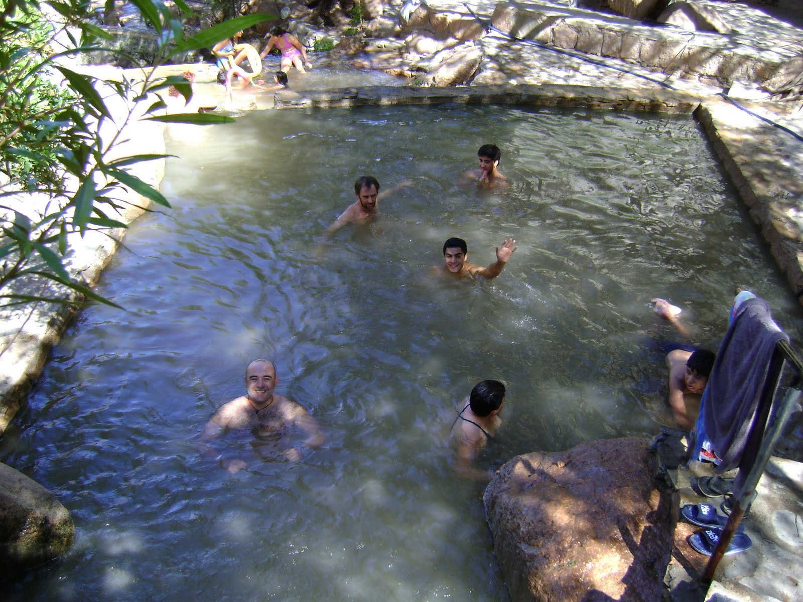
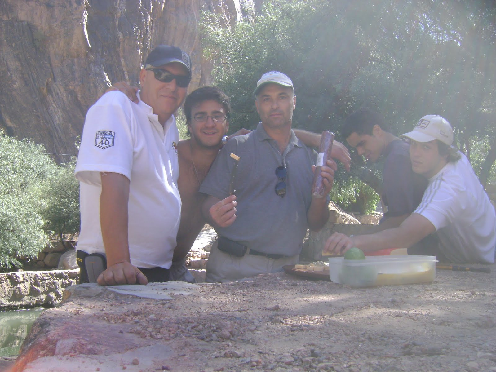
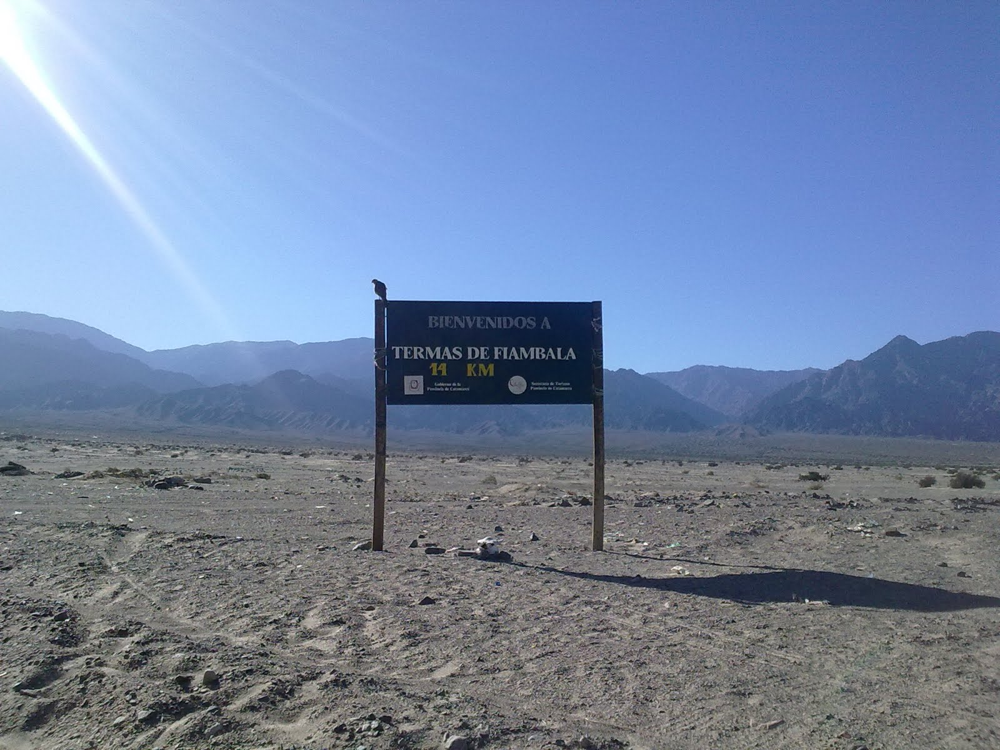
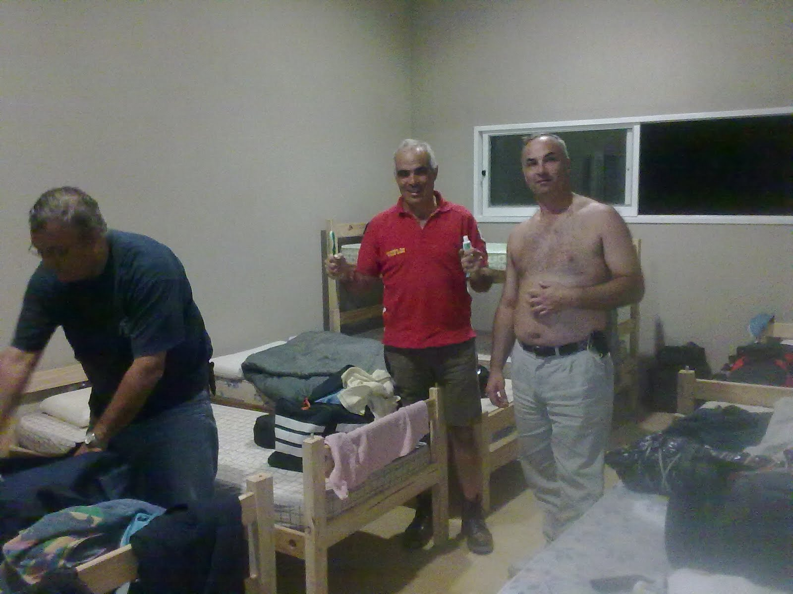
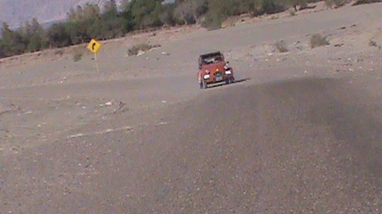

El dia de miercoles 24/3 nos encontró como si estuvieramos corriendo el Dakar. No era para menos, estabamos en lo que habia sido su centro de operaciones.
Lo que no era acorde con la compenetración propia de un Rally era los preparativos par ir a la carniceria y mercado. Terniamos la sana intensión de comernos un rico asadito, preparado por el famoso entre los famosos......EL VASCO!!!!!.
Manuel y Felipe se encargaron de la logistica, y despues de charlarle un rato grande al carnicero, este les regaló un muy preciado frasco de picles.
El camino a las termas se hizo pasando por un terreno desértico que es el que se vió en todos los televisores, cuando transmitían el Rally. Nuestras citronaves lucian como si fueran parte de eso levantando polvo y mostrando toda su estirte.
Las termas de Fiambala están ubicadas a 14 km de la ciudad, y son piletones que se encuentran en la ladera del cerro a temperaturas descendientes ( de 70º a 30º). Nos bañamos y nos comimos un asado de la hostia!!!! hecho por el vasco.
Algunas malas lenguas dicen que orientándose solamente por el olor asado y el hambre, dio con nosotros Pablo Rizzotti, amigo de José y fundador de esto que es experiencia 3CV. Bienvenido!!! y gracias por la mano que nos das con la mecánica de las Citronaves
Despues de todo esto y arreglar los autos, partimos hacia Chilecito, en donde nos estaban esperando para alojarnos en un Hostel. El viaje con el Principito??? Ahogado y sin Burro de arranque.....pero llegó!!!!!. El Camino? Lleno de rocas pintadas que decian no a las minas (creo que no se referian al sexo femenimno.....y eso despues les cuento).
Deseamos agradecer a Josefina, de la Dirección de Turismo de Chilecito, por esperarnos y brindarnos su hospitalidad.
Sugiero ver la foto del cabrito que nos comimos esa noche
VAMOS ALFRE CON EL ASADO!!!!!!!!!!!!!!
Realmente son riquíiiiiisimooooossssss!!!!!!!!!!!
Adry y Lau